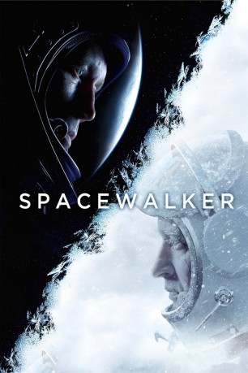

Alternativ: Spacewalk (Originaltitel)
 
 IMDB-Wertung: 7.3 / 10
IMDB-Wertung: 7.3 / 10  Metascore:
Metascore: 
Im Zuge des Kalten Krieges kämpfen die UdSSR und die USA im Jahr 1965 erbittert um die Führung im kosmischen Rennen. Die Sowjetunion steht kurz vor dem historischen Versuch, den ersten Menschen auf einen Weltraumspaziergang zu schicken. Zwei Wochen vor dem geplanten Start explodiert jedoch das Prüfungsraumschiff. Da die Zeit drängt, wird die Ursache nicht ermittelt und das enorme Risiko bei der Fortführung der Mission in Kauf genommen. Der erfahrene Militärflieger Pavel Beljajev und sein jüngerer Partner Aleksej Leonov sind bereit, trotz aller Gefahren den Schritt ins Unbekannte zu wagen.
Jahr: 2017
Dauer: 137 Minuten
FSK: 12
Land: Russland Studio: Capelight PicturesTonspuren:
Untertitel: Deutsch,
Auflösung: 1080p (1920x1080) Größe: 6809 MB
Genre: Thriller, Drama, Abenteuer, Geschichte
Regisseur: Dmitriy Kiselev
Drehbuch: Sergey Kaluzhanov
Soundtrack: Yuriy Poteenko, Aleksandr Vartanov
Darsteller:
Datei: X:\2017(N-Z)\Zeit der Ersten, Die (2017, FSK12, 1920x1080) 3D.mkv seit 20.07.2018
Festplatte: HD 2017(A-Z)-2018(A-F)
 Es gibt insgesamt 170 Filme in der Gruppe '2017(N-Z)'
Es gibt insgesamt 170 Filme in der Gruppe '2017(N-Z)'